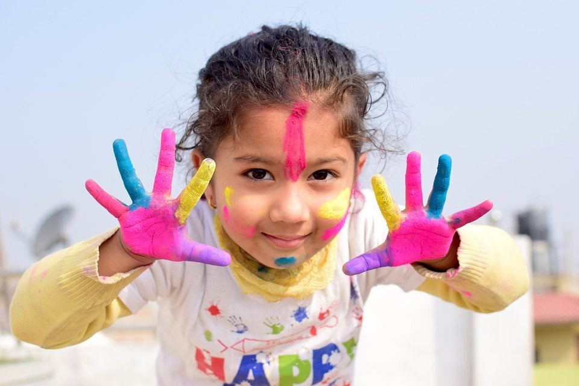

Aprender sobre la reflexión permanente de la práctica institucional, nos ha permitido construir un camino para ACOMPAÑAR a las ORGANIZACIONES sociales en su consolidación, buscando el aumento de interacciones responsables con la comunidad, a través de acciones sin daño que posibiliten el aprendizaje de los actores involucrados para lograr FORTALECER Y DESARROLLAR SUS CAPACIDADES. Se busca facilitar elementos para que las instituciones comprendan, que sus acciones deben ser oportunas, efectivas y eficaces en el contexto con el que interactúan, para que motiven la creatividad, el aprendizaje del error y la sostenibilidad de sus iniciativas, es decir, para que tanto la comunidad como las organizaciones sociales obtengan el máximo beneficio.